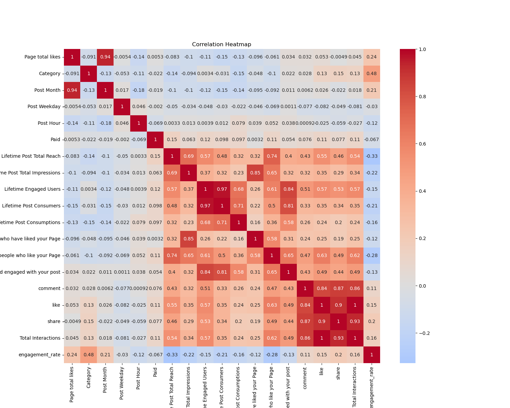
Python | EDAFacebook Engagement Analysis
Data cleaning, exploratory analysis, and regression modeling for engagement patterns.
View in GitHubI am leveraging both my business operations background and growing technical expertise to transform data into actionable insights that drive smarter business decisions. While data analytics remains my primary focus, I'm also exploring opportunities in cloud computing, software engineering, and other areas within the IT industry.
Years in sales and operations taught me how decisions affect customers, revenue, inventory, and team execution.
I am translating that background into Python, SQL, Tableau, AWS, machine learning basics, and web development.
My target is to help teams clean data, find patterns, build dashboards, and make better decisions with evidence.
Feature works
Primary portfolio focus: dashboards, exploratory analysis, machine learning, and business insight.

Python | EDAData cleaning, exploratory analysis, and regression modeling for engagement patterns.
View in GitHub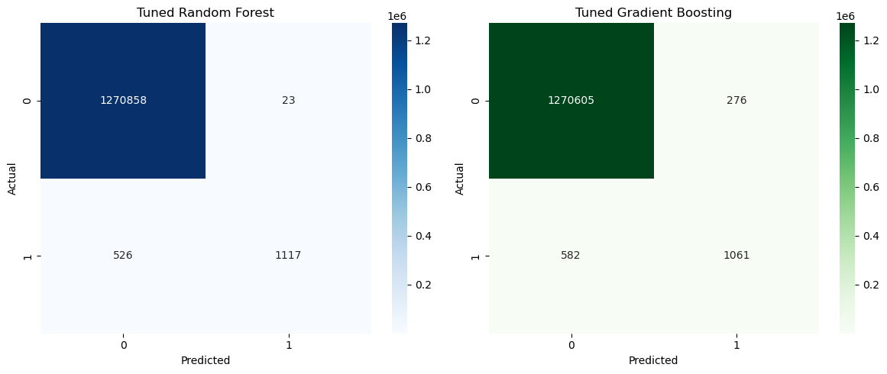
Machine LearningSupervised ML workflow using preprocessing, model tuning, and F1-score evaluation.
View in GitHub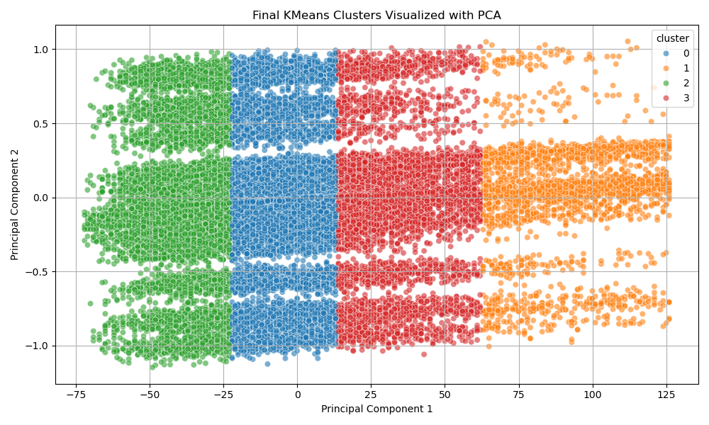
Recommendation SystemsSimilarity-based analysis for recommending songs from feature patterns.
View in GitHub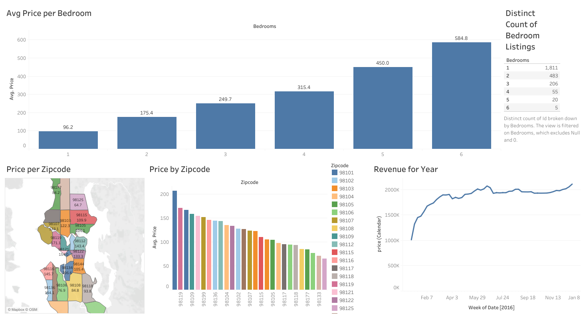
TableauInteractive dashboard exploring pricing, bedrooms, location, seasonality, and competition.
View in GitHub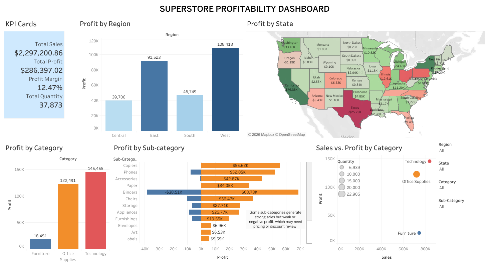
Tableau | DashboardingDashboard analysis of sales, profit, regions, states, categories, and product performance trends.
View in GitHubOther projects
Additional hands-on projects in cloud infrastructure, DevOps, and deployment workflows.
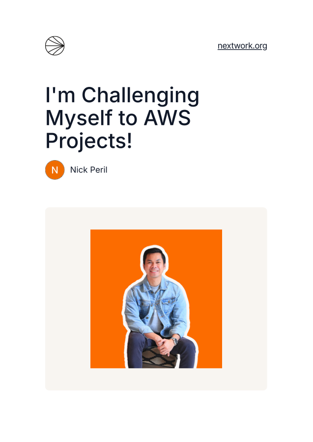
AWS FoundationsCore AWS concepts, console navigation, and service exploration.
View in GitHub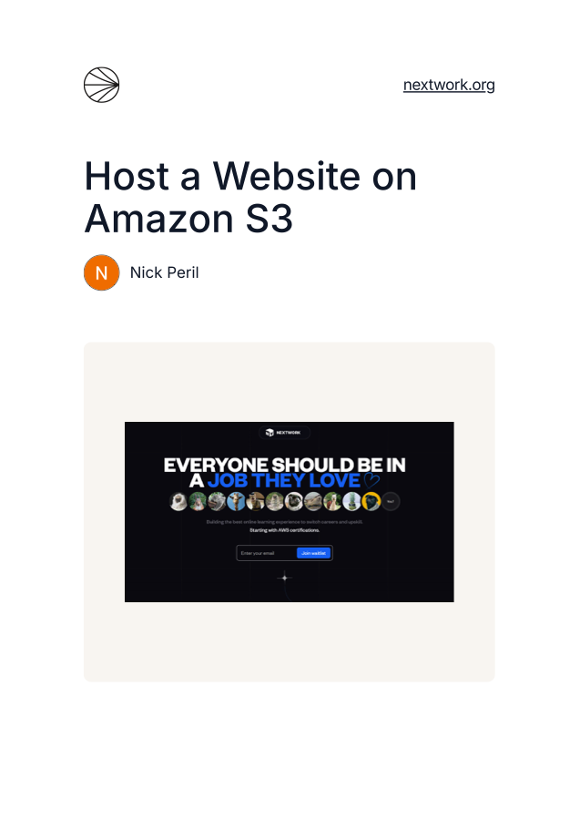
AWS S3Configured S3 hosting, permissions, and deployment flow for a static site.
View in GitHub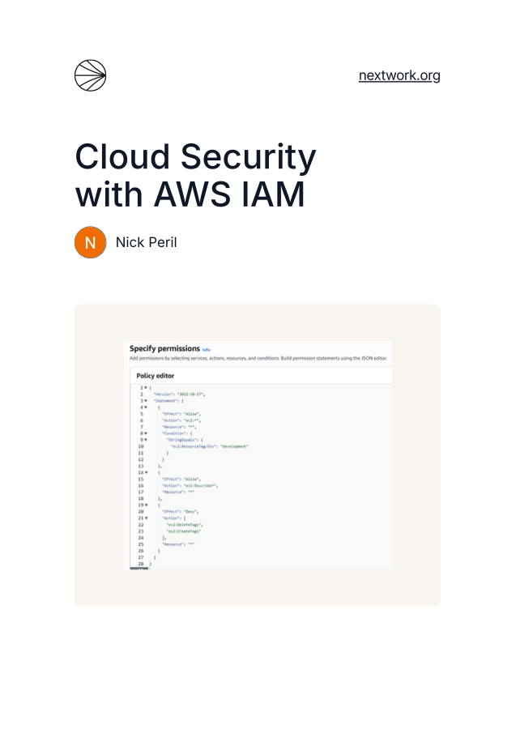
SecurityPracticed IAM users, groups, roles, policies, and access control.
View in GitHub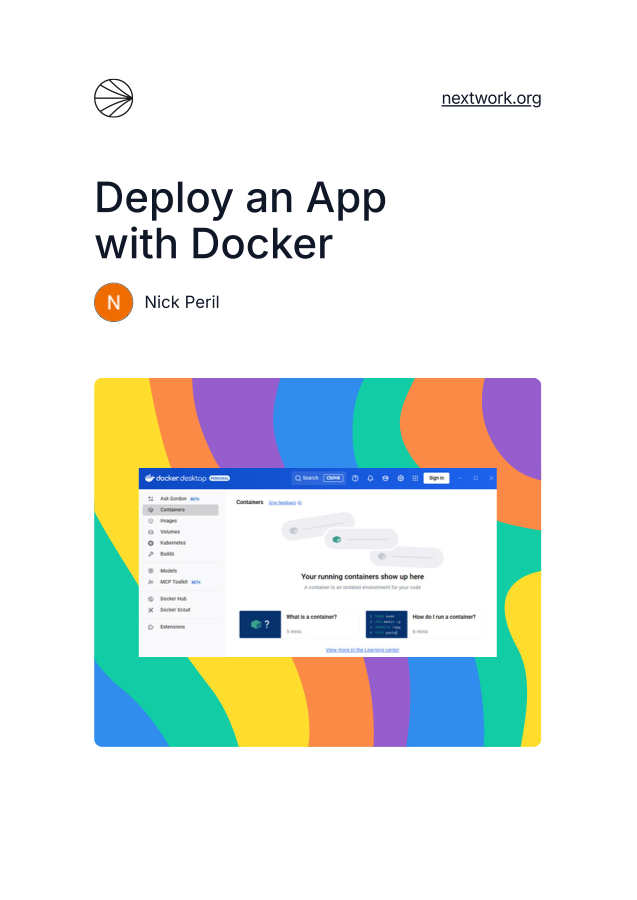
Managed ComputeApplication deployment using managed compute and environment configuration.
View in GitHub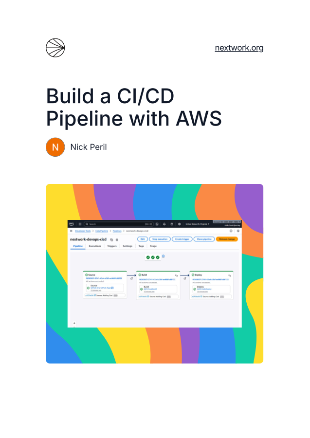
DevOpsHands-on pipeline practice with CodePipeline, CodeBuild, CodeDeploy, and GitHub.
View in GitHub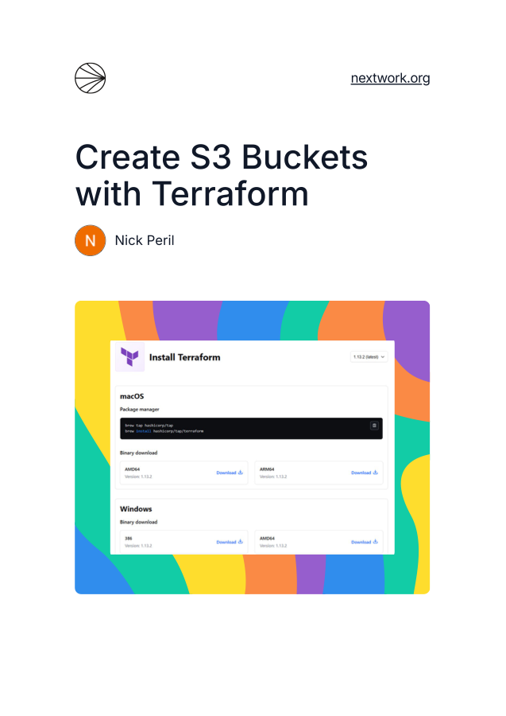
InfrastructureInfrastructure as Code practice for repeatable AWS resource provisioning.
View in GitHub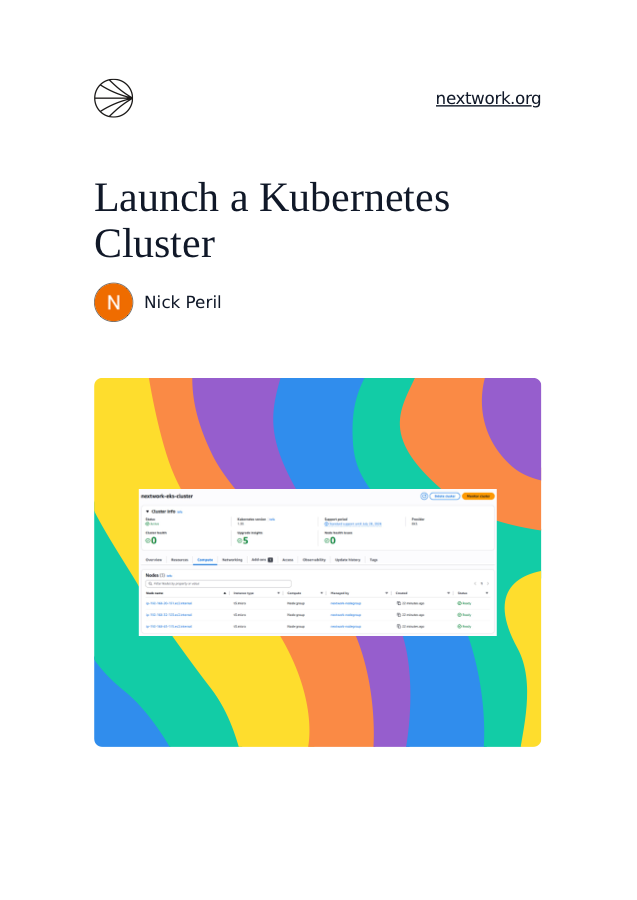
Docker | KubernetesContainer orchestration practice with AWS infrastructure and Kubernetes concepts.
View in GitHub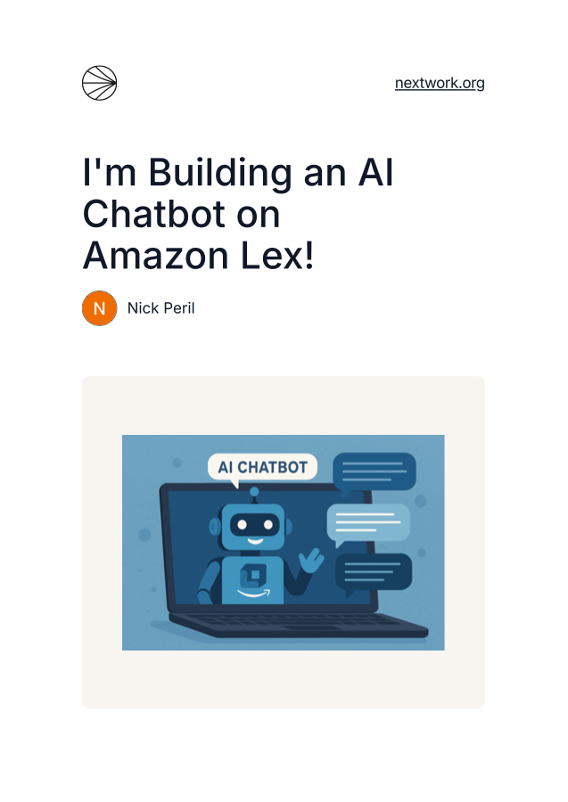
Conversational AIBuilt chatbot flows with intents, utterances, slots, and testing.
View in GitHubAdditional project work showing web development, deployment, and business website experience.
Live e-commerce website built for a family-owned meat retail, wholesale, and reseller business.
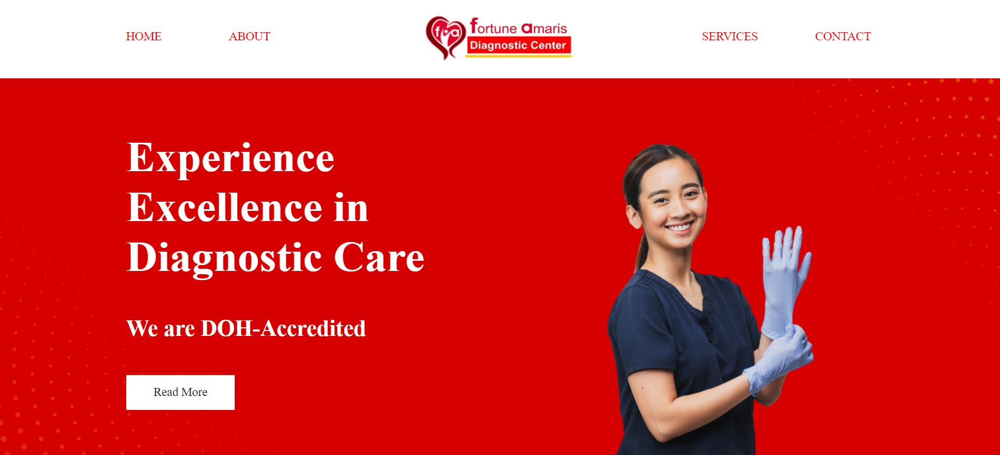
Responsive web project for a diagnostic center service experience.
Visit siteLet's connect